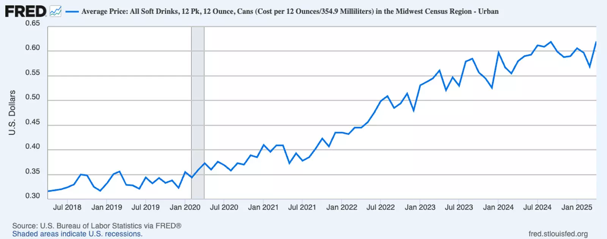
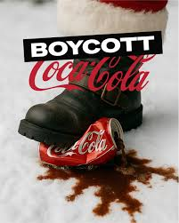

After looking at all of this — the dried wells, the contaminated rivers, the babies fed formula mixed with dirty water, the legal wars waged against the people asking for accountability — a question keeps coming back. Why are we still surprised? These are not accidents. They are not the result of ignorance or miscalculation. They are the result of a system functioning precisely as it was designed to function.

Corporations do not have a conscience built into their structure. They have a legal obligation to generate profit for shareholders — and everything else, including the health of communities, ecosystems, and children, is weighed against that obligation. When it is cheaper to pollute and lobby than to operate cleanly, many will pollute and lobby. When it is profitable to market a product to people who cannot safely use it, some will do exactly that. This is not a moral failure of individuals. It is a predictable output of a system that was never designed to account for the full cost of what it takes from the world.
What makes it harder to confront is the layer of performance that sits on top of all of it. The sustainability reports. The charitable foundations. The carefully designed logos and mascots that invite warmth and trust. These are not side projects — they are load-bearing parts of the business model. A company that is widely understood to be causing harm loses customers, faces regulation, and invites legal liability. A company that is understood to be committed to doing better — regardless of whether it actually is — avoids all of that. The image is not a distraction from the strategy. The image is the strategy.
There is also something worth saying about who pays the price. It is almost never the shareholder in a wealthy country. It is almost always the indigenous community whose water was taken, the mother in a developing nation who could not afford enough formula, the village downstream from the waste pit. The geography of corporate harm follows the geography of power with remarkable consistency. The people with the least ability to fight back absorb the most damage. That is not a coincidence. It is a feature.

None of this is an argument for despair. It is an argument for clarity. Boycotts have worked. International codes of conduct have been written and enforced — imperfectly, but they exist because people pushed for them. Corporations have changed behavior when the reputational and legal cost of not changing became too high. The pressure has to come from somewhere, and it comes from people who refuse to let the image substitute for the reality. That is what this blog is about. Not despair. Just clarity — and the refusal to look away.